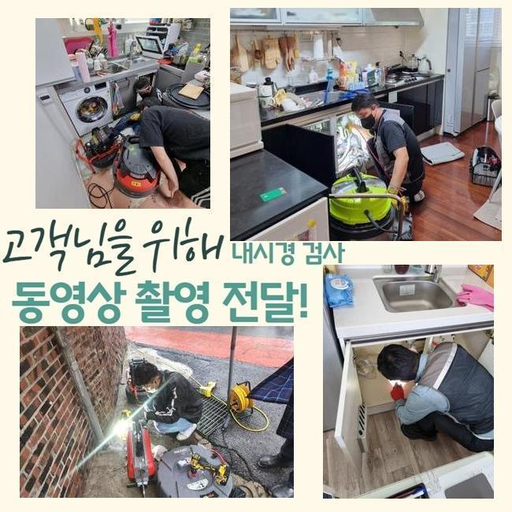
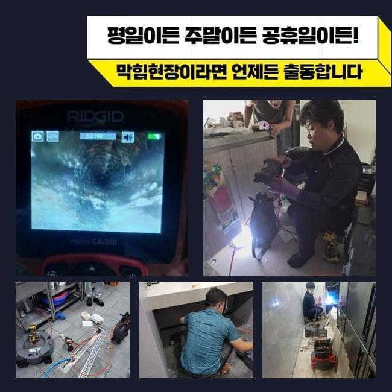
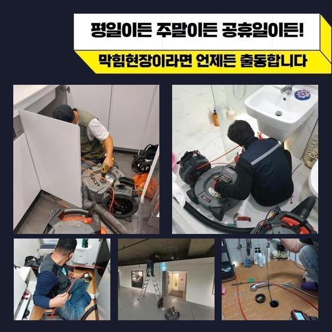
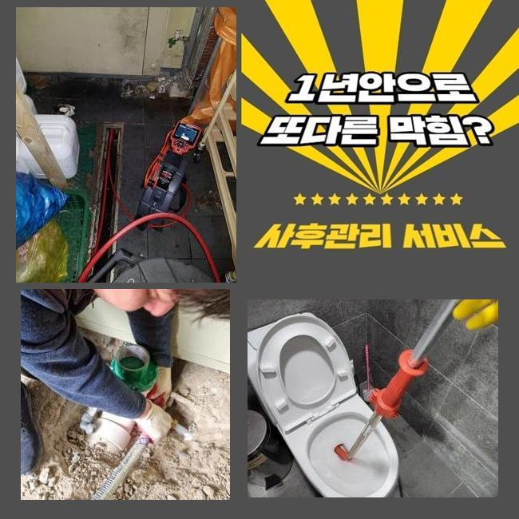
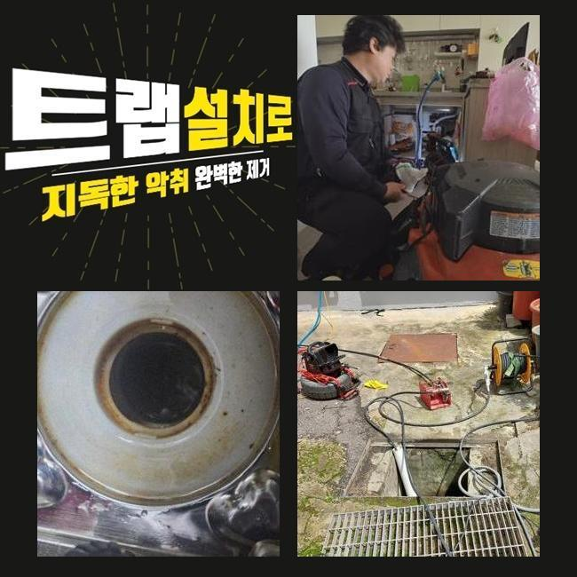
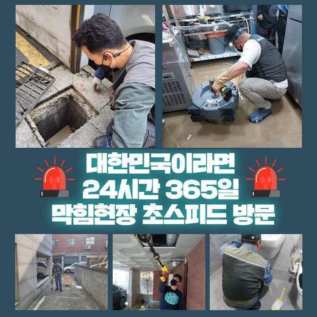
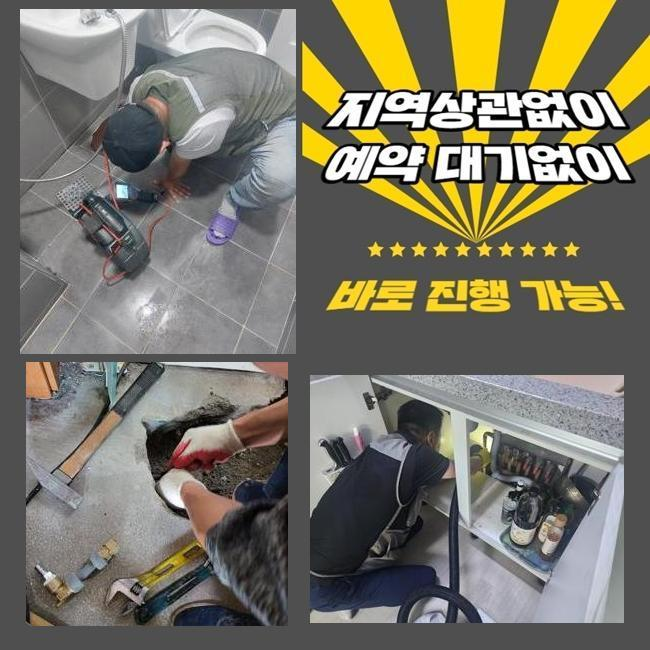

🏠 예산 배관청소 당진 화장실변기역류
용인 변기막힘 전문 시공 후기

📋 작업 개요
- 위치: 용인
- 서비스 유형: 변기막힘, 하수구막힘, 배관막힘, 맨홀막힘, 집수정막힘, 역류해결, 뚫는업체, 배관청소, 고압세척, 악취차단
- 작업 일시: 2024. 12. 13. 9:46
- 업체명: 하수구수사대 (010-5615-2118)
🔍 문제 상황
예산 배관청소 당진 화장실변기역류
하수구 관련 장애가 생긴다면 여러 사람들이 겪는 불편함은 말로는 다할 수 없을 정도죠
원활하게 작동하던 하수구가 뜬금없이 고장나기도 하지만 하수관의 역류 증상까지 같이 올라오는 일이 생기기도 해요
이런 어려움이 나타나기 전 예방차원으로 하수관을 쉽게 정리하는 방식도 있으니 앞으로 남길 내용을 유념하셔서 계신 공간 안도 괜찮은지 간단하게 체크를 해보세요!
집안의 하수구 통수 장애를 얼른 극복하도록 도와달라는 상담을 거쳐서 얼른 작업지로 이동하게 됐는데요
하수구 속이 꽉 막히면 물이 빠지지 못하고 고여있다보니 크기도 속성도 모두 다른 오염원이 산재하게 되고 불쾌한 악취까지도 동시에 유발될 수 있습니다
이러한 방해 요소로 인하여 어찌할 바를 모르셨던 고객분이 불안함을 견디다가 끝내 고쳐달라는 연락을 하신거죠
하수관 불통이 일어나면 홀로 여러 시도를 하면서 물길을 내보려고 하십니다
가볍게만 틀어막혔다면 물을 받아서 내려보거나 소비자도 쉽게 쓸 수 있는 뚫는 핸디 기기나 액상을 부어서 물이 빠져나가도록 만들기도 해요
이런 식으로 노력해서 하수관을 셀프로 뚫어봐도 억울하게도 재발이 생기기에 속만 상하시곤 합니다
괜히 건드리기가 겁나신다면 에너지를 비축해 두시고 대신 가까이에서 대기하는 전문공을 재빠르게 선점하시는 것을 권장드리고 싶습니다

🔎 원인 분석
💡 전문가 진단: 정밀 진단 장비를 사용하여 슬러지의 고착 여부를 판명하고 타격/세척 작업을 실시했습니다.
현황이 어떤지 자세히 주시해봤더니 막혀있는 구멍에서 생긴 역류도 감지를 할 수 있었습니다
이렇게 부패된 하수가 올라오면 악취도 상당하게 퍼지고 증식했던 세균도 영향을 주니 물이 나가게해서 정화해야 합니다!
이번 작업지의 고객님이 언급하신 바는 건물 전체의 하수구 세척을 들어갔었지만 잦은 막힘과 범람이 연쇄적으로 출현했다고 합니다
같은 하수도를 공유하고 있는 여러 세대에 걸쳐 유사한 피해를 입었다면 건물 자체의 메인관로에 불편한 이상 현상이 생긴 가능성도 염두에 두어야 합니다
한 집을 해결한다고 하여 임시방편에 불과하니 세대배관을 넘은 메인관로까지의 종합적인 검사가 이뤄져야 합니다
정기적으로 점검받는 주기를 계획해서 사전에 정상적으로 운영되고 있는지 관심있게 봐줘야 합니다
하수처리가 안되는 현황을 원만히 풀기 위해서 관내의 뷰를 보여주는 내시경으로 간략한 상황파악을 해줬습니다
옥외로 빠져나가는 배관쪽의 결함이라는 진실을 파악하게 됐고 메인 배관의 입구를 열어보기로 마음을 먹었네요
맨홀을 개방하자마자 대량의 오염물이 유출됐었고 밀집도 있게 차올라서 폐수가 달성되지 못했다는 사연을 추정해볼 수 있었습니다
심층에서 생긴 문제점이면 도달하는 것도 무리가 있으니 셀프처리를 도맡는 것은 어렵다고 볼 수 있어요
단순한 막힘을 넘었다면 처음부터 전문조치를 받는 게 장기적인 관점에서 봤을 때 훨씬 옳은 결정입니다

🔧 작업 과정
메인 배관 네트워크 속의 노폐물을 덜어내기 위하여 석션기를 바로 켜서 굵직굵직한 찌꺼기들 꺼내는 단계를 시행했어요
해당 업무를 거치면서 내부에 차오른 이물들을 대강 걷어올려 줍니다
석션기계는 쉽게 말해 일반 청소기와 유사한 속성을 보유한 기계다보니 말끔하게 청소를 해주는거죠
열심히 작동을 시켜서 잔여물 없이 정리해야만 미래에 똑같이 물이 끊기는 곤란한 상황들을 원천차단할 수 있습니다
굵직굵직한 찌꺼기들을 제거하고 새롭게 분석하고자 배관 카메라 장비를 안으로 도로 넣어 차도가 있나 확인했는데요
한데 얽혀있던 오염물질들이 사라졌다는 흔적을 발견했고 통로가 쾌적하게 트인 점 까지 느낄 수 있었습니다
석션작동으로 큰 오물들은 빨아당겼지만 그럼에도 남아있는 조각화된 오물들을 완전하게 없애버리고자 한다면 하수관의 강력한 고압세척 업무가 필연적입니다
넓은 영역에서 주로 쓰는 기법이며 센 수압을 발사해서 관로 곳곳에 부착되고 끼인 기름지고 오래된 묵은 때를 세정하여 맑게 만드는 일이에요
좁은 배관에다 실시하기는 쓸데없이 강력하지만 공동 배관에 쓰면 상당히 시간을 줄여주는 특화된 장비로 애용하고 있습니다
이번 상황은 특수했던 것이 두툼하고 넓은 집수정과 메인관 실내의 좁은 배관들까지 튼튼하지 못한 컨디션이라서 깨지고 파괴되는 일이 없게끔 적절한 세기로 조절해가면서 내부 세척과정을 밟아나갔습니다
만족할 때까지 지속적으로 세정을 해주면서 접착된 찌꺼기들을 몸체로부터 분리시켰습니다
모든 시공 후 내시경으로 마무리를 지을 지 체크했더니 방해물이 없어져서 산뜻해진 관로가 시각적으로 확인되어 작업 마감을 알리게 되었습니다
청소하는 파트들을 최대한 적게 잡기 위하여 관로탐지기 및 도구들을 끝없이 구상하고 궁리합니다
하수구가 연결된 형태라거나 사이즈별로 시행 방식이 달라질 수 있는 부분인데 무작정 고압세척을 돌리면 파이프에 손괴가 생길 수 있고 새 부품으로 교환하게 되면 비용이 배로 다가옵니다
가능하다면 풍부한 수선 경험을 가진 자부심있는 전문업체를 선정하시는 것을 추천드려요
배관은 이해하기 어려운 영역이며 나뭇가지가 퍼진 듯한 구조를 가지고 있는 곳이라서 숙련도가 뛰어나야 능숙하게 파악할 수 있어요
일부 배관의 구간만을 말끔하게 완수한다고 배관 전체의 기능이 회복되지 않을 뿐더러 문제의 재발까지 발현될 수 있으니까요!


✅ 작업 완료
엉성한 전문가에게 컨택을 해서 처리를 한다면 하수구 청소를 했는데도 똑같은 사태가 촉발돼서 기타 업체를 또 물색해야 하는 또 다른 과제가 생기고 막대한 자원을 소모하게 됩니다
물이 꿈쩍도 하기 전에 방지를 해줄 수 있는 방식도 존재하는데 이것도 안내해 드리겠습니다!
수제로 정화작업을 하거나 배관용 세제로 청소하거나 머리카락이 배관으로 들어가는 것을 막는 장치를 장착시켜도 괜찮아요
또다른 방법으로는 뜨거운 물을 구멍에 붓거나 차단망을 위에 설치해도 되는데 이러한 보호 조치를 모두 열심히 썼는데도 배수관이 말썽이라면 전문 시공이 들어가야 합니다
배관이나 하수구 문제로 고민이 상당히 깊으신 고객님들은 저희에게 컨택을 해주시면 아무런 거리낌 없이 문제를 해결해 드리겠습니다




⚠️ 하수구 배관 막힘 예방 및 관리 가이드
- ✅ 머리카락, 비닐, 물티슈 등 물에 분해되지 않는 이물질은 하수구 유입을 절대 금지해 주세요.
- ✅ 하수구 거름망을 씌우고 모여진 이물질은 주기적으로 쓰레기통에 바로 비워주셔야 합니다.
- ✅ 배관 노후가 심할 경우 이물질이 더 쉽게 걸리므로 주기적인 배관 세척(고압세척 등)을 권장합니다.
- ✅ 작업 후 1년 이내 재발 시 하수구수사대에서 무상 A/S 보증 서비스를 제공합니다.
💡 핵심 정리
- 확실한 장비 작업(내시경 점검 및 샤프트 스케일링)으로 원인을 뿌리 뽑습니다.
- 작업 후 1년 이내에 동일한 부위 재발 시 100% 무상 A/S 서비스를 보장합니다.
- 서울 · 경기 · 인천 전 지역에 24시간 언제든 긴급 출동할 수 있도록 항시 대기 중입니다.
❓ 자주 묻는 질문 (FAQ)
🚨 용인 변기막힘 문제로 고민이신가요?
정확한 원인 진단과 확실한 시공으로 재발 없는 해결을 약속드립니다.
24시간 긴급 출동 | 서울 · 경기 · 인천 전지역 | 1년 내 재발 시 무상 A/S